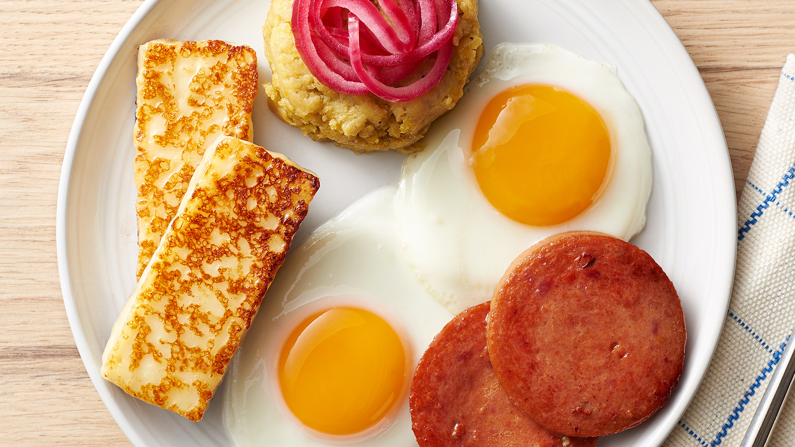

Tres Golpes
A classic combo of mangú, fried cheese, Dominican salami, and eggs, truly a flavorful morning staple.
Harina del Negrito
A comforting Dominican style hot cereal, often made with corn flour or wheat, traditionally stirred with milk and sweet spices.
Puré de Auyama
A smooth, savory mash of auyama, typically flavored with onions or garlic and served with cheese or eggs.

Revoltillo de Huevos
Dominican style scrambled eggs, often mixed with onion, tomato, peppers, and occasionally leftover meats.
Arepita
Small, crisp yuca or corn based fried fritters, perfect for breakfast or snacks.
Pan de Maíz
Dominican cornbread, slightly sweet and tender, often eaten alongside butter or cheese.
Yaniqueque
Crispy, deep fried cornmeal or flour dough, a beloved street-side breakfast treat.